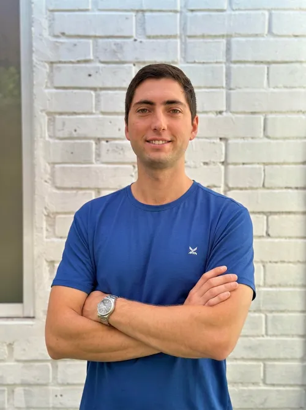
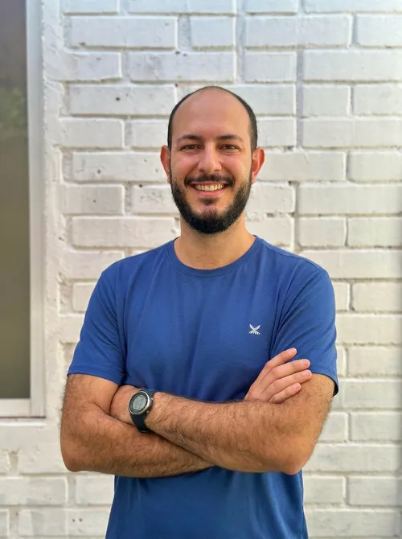
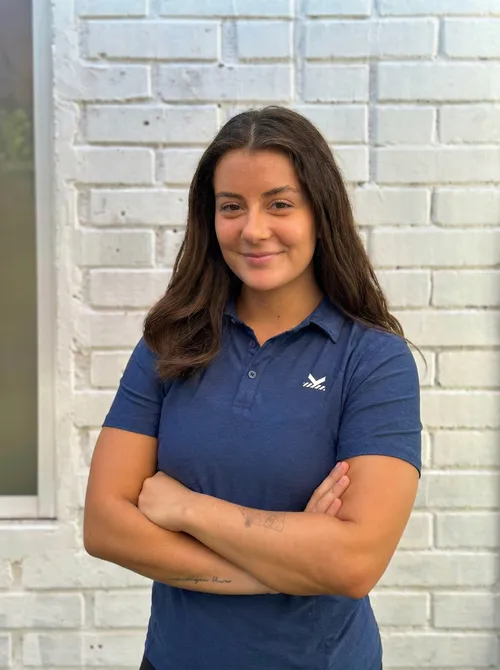

Clemente Mewes
Kinesiólogo Deportivo
Especialista en rehabilitación deportiva y reintegro funcional. Experiencia en lesiones de miembro inferior y recovery deportivo post-partido.
Rehabilitación deportiva, reintegro funcional y kinesiología de piso pélvico. Kinesiólogos especializados en salud deportiva y recuperación de lesiones. Vitacura y BOA Park Linderos, Buin.
La kinesiología deportiva en Kalud va más allá de "ponerte el parche". Diagnosticamos la causa de tu lesión, diseñamos un plan de recuperación progresivo y te acompañamos hasta que vuelvas a rendir al 100% en tu deporte.
Nuestros kinesiólogos trabajan coordinados con el equipo de quiropraxia y entrenamiento para un abordaje integral que acelera tu recuperación.
Diagnóstico kinesiológico completo: historia clínica, evaluación del movimiento y pruebas funcionales específicas para tu deporte.
Control del dolor e inflamación. Técnicas manuales, electroterapia y ejercicios de activación para mantener la musculatura.
Recuperación de fuerza, rango de movimiento y propiocepción. Ejercicios específicos para las demandas de tu deporte.
Protocolo gradual de vuelta al deporte con criterios objetivos. No volvemos al campo hasta estar seguros al 100%.
El piso pélvico es un conjunto de músculos que sostienen los órganos pélvicos. Cuando falla —por parto, cirugía, sobrecarga deportiva o envejecimiento— aparecen problemas que afectan la calidad de vida.
En Kalud contamos con kinesiólogos especializados en piso pélvico que realizan evaluaciones internas y diseñan un plan terapéutico personalizado.
Atención especializada
y confidencial

Especialista en rehabilitación deportiva y reintegro funcional. Experiencia en lesiones de miembro inferior y recovery deportivo post-partido.

Especialista en prevención y tratamiento de lesiones deportivas. Enfocado en deportistas de campo, runners y atletas de contacto.

Especialista en rehabilitación de lesiones musculoesqueléticas. Atención integral con enfoque en el retorno seguro al deporte.
Ajustes articulares que complementan la kinesiología y aceleran la recuperación.
Ver más →Masaje deportivo y ventosas para aliviar el dolor muscular y acelerar el proceso de rehabilitación.
Ver más →Una vez recuperado, fortalece tu cuerpo para no volver a lesionarte. El paso final del ciclo.
Ver más →